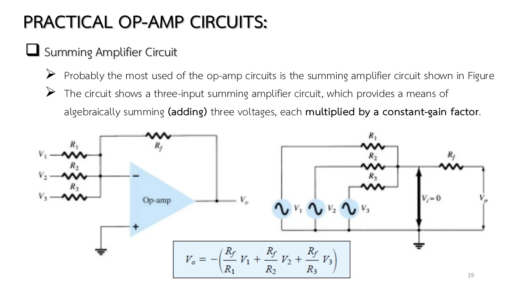
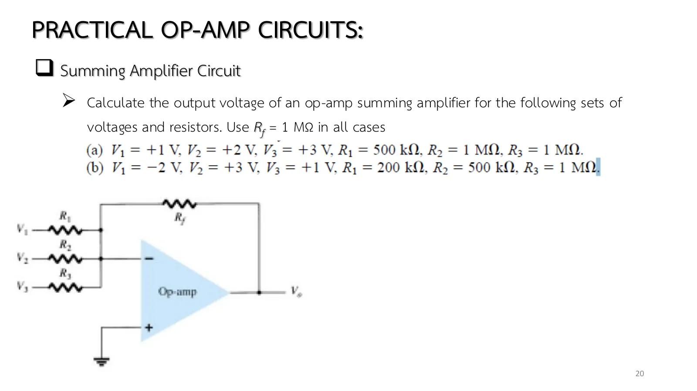
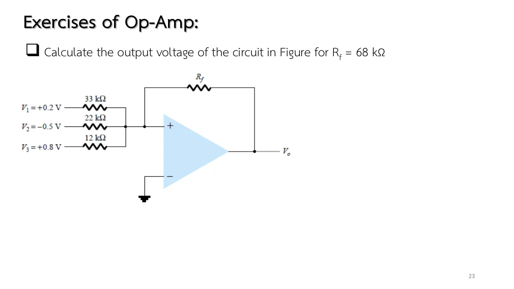
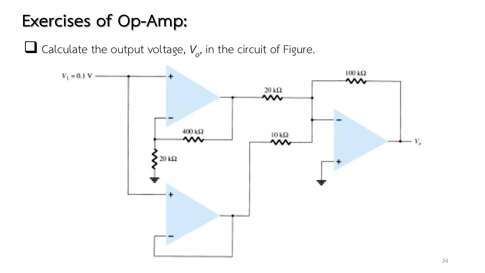

Chapter 7 slide set I, pp. 19–20 and the exercises on pp. 23–24. The most used op-amp circuit: several inputs, each through its own resistor, meet at the − input, a virtual ground, so their currents are independent; their sum flows out through \(R_f\). The output is the weighted sum, each input weighted by its gain \(R_f/R_k\), with the sign reversed. This page has an adjustable three-input circuit (section A), both parts of Example 10.7, the problem of p. 23 (the book's Problems 8–9, including the case where the sum exceeds the rail) and the three-op-amp problem of p. 24.
Why it sums (p. 19, Fig. 10.37b): the − input sits at 0 V (virtual ground), so the right end of every resistor is at 0 and each current \(I_k = V_k/R_k\) knows nothing of the others. The − input takes no current, so the total \(\sum I_k\) passes through \(R_f\) and \(V_o = -R_f\sum I_k\) (Eq. 10.11).
Each input has its own gain \(R_f/R_k\): Example 10.7a: 2, 1, 1 give −7 V; 10.7b: 5, 2, 1 with a negative \(V_1\) give +3 V. A negative input contributes a positive term.
Limits: the sum must stay below \(V_{sat}\) ≈ 13 V. The book's Problem 8 (\(R_f\) = 330 kΩ) wants −16.5 V and hits the rail. The largest \(R_f\) before saturation is \(V_{sat}/\sum I_k\).
Cascading stages (p. 24): an op-amp's output resistance is low, so it drives the next stage's input resistor without being loaded. Work from left to right: 21 × 0.1 V = 2.1 V and 0.1 V (follower), then −(5 × 2.1 + 10 × 0.1) = −11.5 V.
What it is for: audio mixers, weighted 1 : 2 : 4 digital-to-analogue converters, and averagers (equal \(R_k\), \(R_f = R/n\)).

สไลด์หน้า 19: วงจรรวมสัญญาณสามขาเข้า (รูป 10.37, สมการ 10.11)Slide p. 19: the three-input summing amplifier (Fig. 10.37, Eq. 10.11)

สไลด์หน้า 20: โจทย์ Example 10.7Slide p. 20: Example 10.7

สไลด์หน้า 23: โจทย์ข้อ 9 (รูป 10.68) — ดูกรอบเตือนSlide p. 23: Problem 9 (Fig. 10.68), see the note

สไลด์หน้า 24: โจทย์ข้อ 14 (รูป 10.73)Slide p. 24: Problem 14 (Fig. 10.73)
Slide p. 23 (and the book's Fig. 10.68) draws the three input resistors into the upper terminal marked + and returns \(R_f\) to that same terminal, with the − input grounded. That is positive feedback: the output would run to a rail instead of summing. A summing amplifier needs the inputs at the − terminal and the + terminal grounded (as in Fig. 10.37); problem 3's simulation uses the latter. The slides give no solutions: p. 20 is Example 10.7, pp. 23–24 are Problems 9 (and 8) and 14 of chapter 10. Problem 8 (\(R_f\) = 330 kΩ) gives −16.5 V by the equation, beyond \(V_{sat}\), so the simulation saturates at −13 V.
A
วงจรรวมสามขาเข้าที่ปรับได้: ดูส่วนของแต่ละขา
The adjustable three-input summer: watch each input's term
Set \(V_1\), \(V_2\), \(V_3\) and the four resistors. The lower panel shows the three terms \(-(R_f/R_k)V_k\) and the total \(V_o\). Reverse the sign of one input: its term flips while the others stay put. Raise \(R_f\) until the output hits the 13 V rail, and watch the dots: each input's current meets the others at the − input and they flow through \(R_f\) together.
1
Example 10.7(a): ขาเข้าบวกทั้งสาม
Example 10.7(a): three positive inputs
สไลด์หน้า 20 · Boylestad Example 10.7a (สมการ 10.11)
\(V_1\) = +0.2 V through 33 kΩ, \(V_2\) = −0.5 V through 22 kΩ, \(V_3\) = +0.8 V through 12 kΩ. Find \(V_o\) for \(R_f\) = 68 kΩ (Problem 9) and 330 kΩ (Problem 8).
\(V_1\) = 0.1 V feeds two op-amps: the upper one a noninverting amplifier, 400 kΩ/20 kΩ, the lower one a unity follower. Their outputs pass through 20 kΩ and 10 kΩ into a summer with \(R_f\) = 100 kΩ. Find \(V_o\).
Set every input to 1 V with \(R_1 = R_2 = R_3\) = 300 kΩ and \(R_f\) = 100 kΩ: the −1 V output is minus the average (an averager).
Set \(R_1\) = 10 kΩ, \(R_2\) = 20 kΩ, \(R_3\) = 40 kΩ, \(R_f\) = 10 kΩ and switch the inputs between 1 V and 0: the output −(1·b₁ + 0.5·b₂ + 0.25·b₃) is a 3-bit digital-to-analogue converter.
Raise \(R_f\) until the badge says "saturated": the computed terms exceed 13 V but the \(V_o\) bar stops at 13 V, and the current in \(R_f\) grows no further.
Try this 2 — problems 1–4
Problem 2: the dots on the \(V_1\) = −2 V row run against the other two rows, because its current flows out of the virtual ground; the net 3 µA in \(R_f\) flows in from the output.
Problem 3, last step: \(V_-\) is no longer 0 V (hover over the op-amp: \(V_d\) is several millivolts), because the feedback loses its grip once the output hits the rail.
Problem 4: hover over the 20 kΩ and 10 kΩ resistors: 105 µA + 10 µA = 115 µA through \(R_f\) = 100 kΩ gives exactly 11.5 V.
Chapter 7 slide set I, pp. 19–20, 23–24 · Boylestad & Nashelsky, 11th ed., §10.5 (Fig. 10.37, Example 10.7), Problems 8–9 and 14